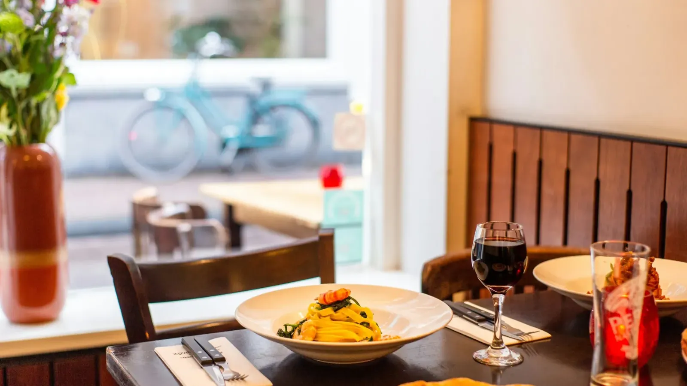

La risposta breve
Si pranza verso le 13:00 e si cena dalle 20:00; i ristoranti pieni alle 18:00 di solito sono per turisti. Non devi ordinare tutte le portate. Controlla sul menu il coperto e se il servizio è già incluso. La mancia non è dovuta: arrotondare o lasciare un paio di euro per un buon servizio è più che sufficiente. E ricorda che il conto arriva solo quando lo chiedi.
Orari dei pasti
La colazione è piccola e dolce: cappuccino e cornetto al bar, in piedi. Il pranzo va dalle 12:30 alle 14:30 circa e molte cucine chiudono nel pomeriggio. La cena inizia verso le 19:30 al nord e alle 20:30 o più tardi a Roma e al sud. In mezzo c'è l'aperitivo (circa 18:00–20:00): uno spritz o un calice di vino con qualcosa da mangiare. Se hai fame alle 16:00, cerca un bar, un forno o una pizza al taglio.
Come ordinare
Un menu tradizionale ha antipasti, primi (pasta, risotto, zuppe), secondi (carne o pesce) con i contorni (ordinati a parte) e i dolci. Nessuno si aspetta che tu li prenda tutti: un primo e un contorno, o un antipasto da dividere e un secondo, è normalissimo. In pizzeria ognuno ordina una pizza intera, da mangiare con coltello e forchetta. Il vino della casa in caraffa di solito è buono ed economico. L'acqua è in bottiglia, naturale o frizzante; puoi chiedere l'acqua del rubinetto, ma non tutti la servono.
Coperto, servizio e conto
- Il coperto è un costo fisso a persona per pane e apparecchiatura, di solito €1–4 (di più nei posti molto turistici). È legale, ma deve essere scritto sul menu. In alcune città e in molti locali non si paga affatto.
- Il servizio è un costo del 10–15% che a volte si aggiunge nelle zone turistiche. Anche questo deve essere indicato sul menu. Se è nel conto, non serve lasciare la mancia.
- Il cameriere non porta il conto finché non lo chiedi: fai un cenno e di' “il conto, per favore”. Restare seduti a lungo è normale, non scortese.
- I gruppi di solito ricevono un solo conto; dividere in parti uguali si dice pagare alla romana. Le carte si accettano quasi ovunque, ma tieni un po' di contanti per i locali piccoli.
- Tieni sempre lo scontrino: è la prova legale del pagamento.
Per sapere quanto costa davvero un pasto, guarda quanto costa un viaggio in Italia.
La mancia
In Italia i camerieri hanno uno stipendio e la mancia non fa parte della cultura come negli Stati Uniti. Di solito si arrotonda o non si lascia nulla. Se il servizio è stato davvero buono, qualche euro o il 5–10% è apprezzato, mai preteso. Al bar lasciare gli spiccioli del resto è un bel gesto. In taxi si arrotonda all'euro successivo.
Il caffè al bar
- Il caffè è l'espresso. Bevilo al banco: in piedi costa molto meno che seduti al tavolo (il servizio al tavolo può raddoppiare il prezzo).
- In molti bar si paga prima alla cassa e poi si dà lo scontrino al barista.
- Il cappuccino si beve la mattina; ordinarlo dopo un pranzo o una cena abbondante è insolito (non te lo rifiuteranno, ma la gente del posto prende un caffè).
- D'estate lo vuoi freddo? Chiedi un caffè shakerato. Con un goccio di latte: caffè macchiato.
Regole non scritte
- Niente parmigiano sulla pasta con il pesce: molti cuochi si offendono.
- La pasta arriva nel suo piatto, non come contorno della carne.
- Fare la scarpetta va benissimo in trattoria, meno a una cena formale.
- Il pane si mangia con il pasto, non si intinge in olio e aceto balsamico prima.
- Prenota il venerdì e il sabato sera e per il pranzo della domenica, il grande pasto di famiglia.
- Diffida dei locali con il menu fotografato e il personale che ti chiama dalla strada nelle piazze più turistiche.
Frasi utili (per chi viaggia con amici stranieri)
| Italiano | Inglese |
|---|---|
| Un tavolo per due, per favore | A table for two, please |
| Il conto, per favore | The bill, please |
| Acqua naturale / frizzante | Still / sparkling water |
| Mezzo litro di vino della casa | Half a litre of house wine |
| Sono allergico/a a… | I'm allergic to… |
| Senza glutine | Gluten free |
Trova dove mangiare, quando mangia la gente del posto.
In 687 Italy ogni giornata è organizzata con gli orari reali, così pranzo e cena capitano quando le cucine sono aperte, con Nearby per trovare un locale vicino a te e la mappa offline. Se cambiano i piani, NOW ricostruisce il resto della giornata.
Fonti
- ENIT – Agenzia nazionale del turismo
- Turismo Roma – sito ufficiale del turismo
- Feel Florence – sito ufficiale del turismo
Verificate su questi siti ufficiali a novembre 2026. Prezzi e regole possono cambiare: controlla sempre prima di partire.